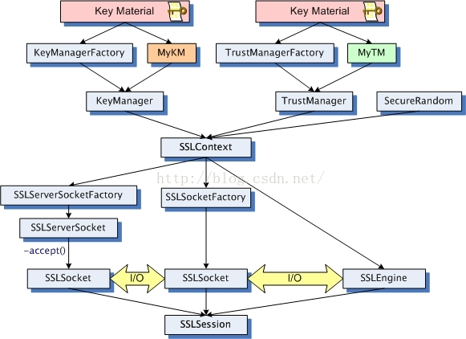

一、 简介

JSSE接口的主要类
- 通信核心类 – SSLSocket 和 SSLServerSocket
- 客户端与服务器端Socket工厂 – SSLSocketFactory 和 SSLServerSocketFactory
- SSL会话 – SSLSession
- 安全通信握手过程需要一个会话，为了提高通信的效率，SSL协议允许多个SSLSocket共享同一个SSL会话， 在同一个会话中， 只有第一个打开的SSLSocket需要进行SSL握手，负责生成密钥及交换密钥，其余SSLSocket都共享密钥信息
- SSL上下文 – SSLContext
- SSL非阻塞引擎 – SSLEngine
- 密钥管理器 – KeyManager
- 信任管理器 – TrustManager
- 密钥证书存储设施 – KeyStore
客户端模式或服务器模式
- 关于身份认证方面有个名词叫客户端模式，一般情况客户端要对服务器端的身份进行验证，但是无需向服务器证实自己的身份，这样不用向对方证实自己身份的通信端 我们就说它处于客户模式，否则成它处于服务器模式。SSLSocket的 setUseClientMode(Boolean mode) 方法可以设置客户端模式或服务器模式。
二 、 证书简介
- 证书获取的途径